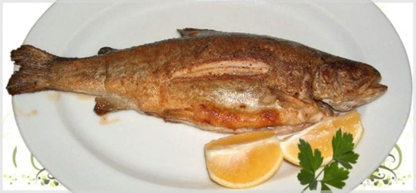
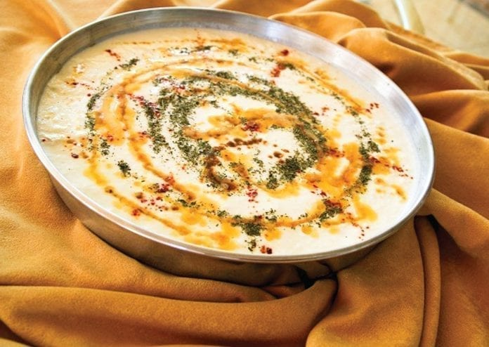
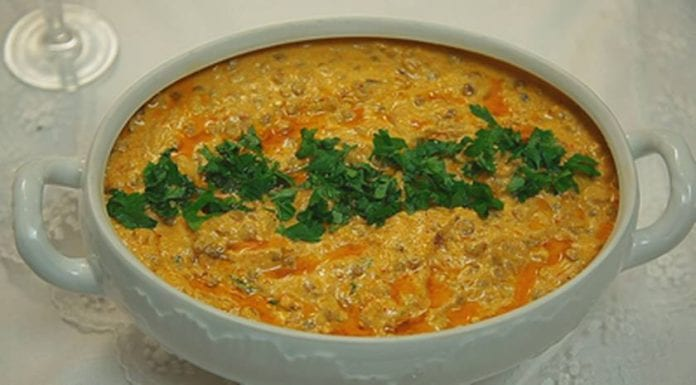
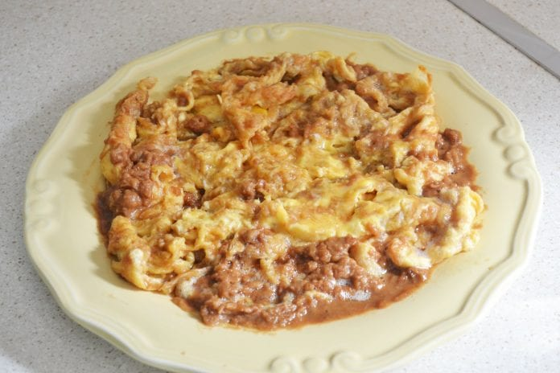
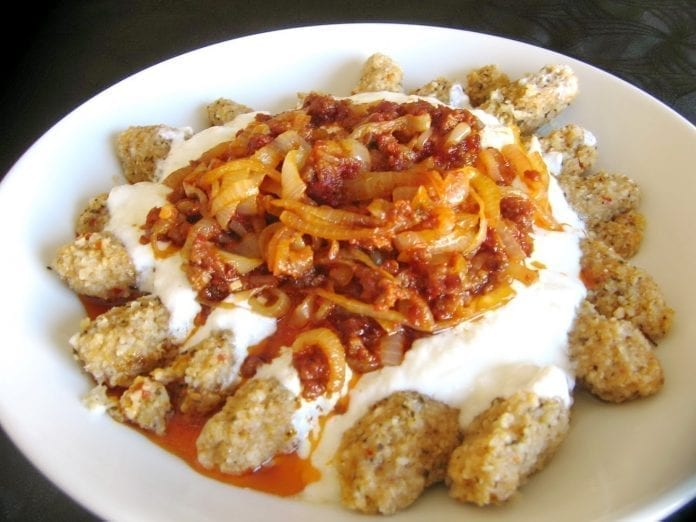
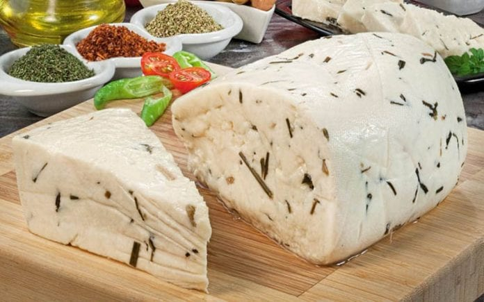
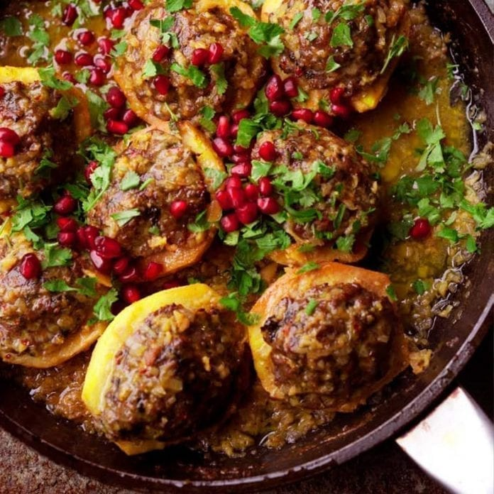
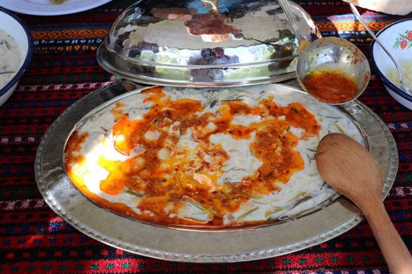
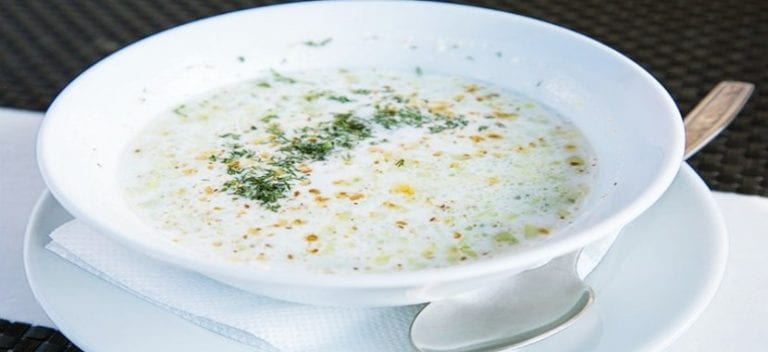
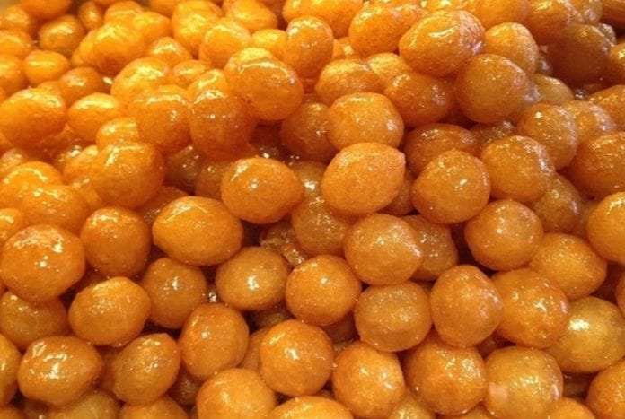

Van'ın Yöresel Yiyecekleri
Van Mutfak Kültürü
Van ülkemizin Doğu Anadolu bölgesinde bulunan şehirlerinden biridir. Genel olarak bölgenin mutfak kültürünü taşıyan Van mutfağında merak edebileceğiniz birçok yöresel lezzet bulunuyor. Farklı mutfaklardan lezzetleri deneyimleyebileceğiniz, kahvaltı konusunda bol çeşitlilik görebileceğiniz bir mutfaktır. Van mutfağı üzerinde en çok etkili olan mutfaklar ise İran mutfağı ile Arap mutfağıdır. Bu durumun en temel nedeni de tarih boyunca Van’ın İpek Yolu üzerinde bulunuyor olmasıdır.
Şehrin coğrafi konumunun yöresel mutfağı üzerinde etkileri büyüktür. Çok uzun zamandır insanların yerleşim yeri olarak kullandığı bir yer olması da beraberinde yemek kültürünün bir hayli zengin olmasının ana nedenlerinden biridir. Van yöresinde en çok tüketilen besinlerden biri de ettir. Et tüketiminin ne kadar fazla olduğunu yöresel lezzetleri inceleyerek de fark edebilirsiniz. Bazı durumlarda tatlıların içinde bile et görmeniz mümkün.
Yöre halkın et tüketimine düşkün olması genel olarak şehrin bulunduğu bölgenin özelliklerinden biridir. Halk düzenli olarak kışlık yiyecekler hazırlar. Bu yiyecekler arasında en çok hazırlananlar da erişte, peynir ve tarhana olarak biliniyor. Şehirde deneyimleyebileceğiniz ilginç kahvaltılıklar da bulunuyor. Hamur işleri, sebze yemekleri ve et yemekleri konusunda oldukça geniş bir yemek zenginliği bulunmaktadır.
Van’dan Alınabilecek Yiyecekler:
Van yöresel mutfağı denilince şüphesiz ilk akla gelen meşhur kahvaltısı oluyor. Elbette bu kahvaltıyı bu denli meşhur kılan ise içeriğindeki bazı farklı yiyeceklerdir. Bunların başında meşhur Van otlu peyniri geliyor. Ardından kavut da kahvaltıda farklı bir boyut katıyor. Bu iki ürünü Van şehir merkezindeki kahvaltı ürünleri satan yerlerden paket olarak satın alabilirsiniz.
Van’ın En Meşhur Tatlısı:
Van’a özgü kaşık tatlısı yerel halk tarafından sevilerek tüketilen bir tatlı türüdür. Bunun yanı sıra çatal ve eğdek tatlıları da yine Van’da deneyebileceğiniz tatlı türleriniz. Dilerseniz Van seyahatiniz dönüşü bu tatlılardan paket olarak yaptırabilir ve sevdiklerinize de götürebilirsiniz.
Van’dan Alınabilecek Doğal Ürünler:
Van’dan alabileceğiniz doğal ürünler arasında kurut, çiriş otu, otlu peynir ve kahvaltılarda yiyebileceğiniz kavut yer almaktadır. Tüm bu ürünleri Maraş Caddesi’ndeki doğal ürünler satan dükkanlardan satın alabilirsiniz.
Van'ın Yöresel Yiyecekleri
Çiriş Pilavı

Çiriş pilavı, her yerde yiyebileceğiniz bulgur pilavlarından bir hayli farklıdır. Çiriş otu ile yapılan bu lezzeti denemek için mutlaka Van’a gitmeniz gerekir. Van’ın yöresel pilavı olan çiriş pilavının içerisinde karabiber, tuz, havuç ve nohut bulunuyor. Bunun yanı sıra pilav hazırlanırken kullanılan yağın da yöresel olması şart.Çiriş pilavının tadının normal bulgur pilavlarından biraz daha farklı olduğunu itiraf etmek gerek. Bu pilavı deneyenlerin ya çok sevdiği ya da hiç sevmediğini söyleyebiliriz. Çirişin pilava kattığı hafif bir tat var. Bu tadı bir kere sevdikten sonra tek porsiyon ile doymanız mümkün olmayabilir. Van’da çiriş pilavını deneyebileceğiniz birçok restoran bulunuyor. Yöresel lezzetlerine oldukça bağlı bir şehir olarak Van’da çiriş pilavı lezzetini mutlaka denemeniz önerilir. Çiriş otunun faydalarından da fazlasıyla söz etmek mümkündür. Son derece besin değeri ve vitamin değeri yüksek olan çiriş pilavı, özel lezzetleriyle birlikte Van’da ele alınarak sunulmaktadır.
Nerede Yenir:https://www.instagram.com/vanasiyanevyemekleri/
Fiyat Aralığı:
Tandırda Van Balığı
Van balığı, yöre halkı tarafından inci kefaline verilmiş bir isimdir. Bu nedenle ilk bakışta Van balığı ismi size tanıdık gelmeyebilir. İnci kefaline Van balığı isminin verilmiş olmasının en büyük nedeni Van Gölü içerisinde tatlı su balığı olarak avlanıyor olmasıdır.sBalık yemeyi seviyorsanız bir de tandırda pişen balıkları denemelisiniz. Tandırda pişmesinden olacaktır ki her hali ile balığın eti çok daha yumuşak ve ağızda dağılan bir tada sahiptir. Doğrudan tandırlarda pişirilerek balık evlerinde misafirlere ikram edilen tandırda Van balığını denemeden balık seviyorum demeyin. Çünkü balık yemenin bambaşka bir yüzünü göreceksiniz. Tandırda yavaşça pişen Van balığı yanında limonla servis ediliyor. Restoranlarda ikram edilen salata ile de çok yakışan bir lezzettir. Evlerinizde pişirdiğiniz balıklardan tat olarak çok daha farklı olması ve tandırda balık deneyimini her yerde deneyemeyecek olmanız gibi nedenler ile yolunuz Van’a düşerse bu lezzeti denemeden gitmemeniz tavsiye ediliyor.
Nerede Yenir:https://www.tripadvisor.com.tr/LocationPhotoDirectLink-g298041-d7986155-i130245639-Grandeniz_Tour_Restaurant-Van.html
Fiyat Aralığı:
Kurut Aşı
Kurut aşı temelde mercimek ve erişte ile yapılan bir yemektir. Aynı zamanda içerisine yoğurt da eklenen bu lezzetin adının kurut aşı olmasının en büyük nedeni Van’a özgü kurut ile yapılıyor olmasıdır. Kelimenin tam anlamı ile şehrin kendi yöresinin bir ürünü olarak bilinen Kurut aşı sarımsaklı yoğurt ile yenir. Lezzeti özel kılan birçok faktör var. Et suyu ile pişmesinden tutun da eritilmiş salçanın kurut ile harmanlanmasına kadar her yönden oldukça yöresel bir lezzettir.Van yöresinin özel lezzetleriyle çok kaliteli ve iyi tat kazandırılan kurut aşı belirttiğimiz üzere sarımsaklı yoğurdun yanında yenmesi daha uygun olacaktır. Van bölgesinde gezi yapan kişilerin kurut aşı yemeğiyle birlikte acıkma hissini giderecekleri de bir gerçektir. Kurut aşını denemek için şehirde bulunan yöresel restoranlara gidebilirsiniz.
Nerede Yenir:https://www.instagram.com/vanasiyanevyemekleri/
Fiyat Aralığı:
Sengeser Yemeği
Van denediğiniz birçok yöresel lezzeti başka bir yerde bulamayacağınız şehirlerden biridir. Senseger yemeği de bu lezzetler arasında yer alıyor. Senseger yemeğinin ana bileşenleri soğan ve mercimektir. Bu iki malzeme ile yapılan bir yemeğin lezzeti başlarda sizi düşündürebilir ancak kelimeni tam anlamı ile bir lezzet cümbüşü ortaya çıkıyor.Senseger yemeğinin usta ellerden hazırlanmış olmasını zorunlu kılan birçok püf noktası bulunuyor. Özellikle soğanların ince ince doğranması yemeğin lezzetini etkileyen önemli faktörlerden biridir. Sengeser yemeğinin görüntü olarak maydanozlar ile süslenmesi de genel bir gelenektir. Soğan ve mercimeklerin birlikte pişirilmediğinde aynı tadı bulmak mümkün olmuyor. Sengeser yemeğini denemek için yöre halkının evine misafir olabilirsiniz.
Nerede Yenir:
Murtuğa
Murtuğa Van usulü yapılan omlettir. Kelimenin tam anlamı ile omlet olarak isimlendirmek mümkün olmasa da en yakın tabiri bu şekilde denebilir. Murtuğayı kimi zaman kahvaltılarda kimi zaman da akşam yemeklerinde yöre halkının evinde sıkça görebilirsiniz. Murtuğa deneyimlemek için Van’ın kahvaltı restoranlarına gitmeniz yeterli olacaktır.Bu kahvaltılığı omletten ayıran en büyük unsur ise hakiki tereyağı ile pişirilmesi ve pişme sürecinde içerisine un eklenmesidir. Unların kavrulması ile yumurtanın pişmesi eş zamanlı olarak gerçekleşir. Bu nedenle murtuğa omletten bir hayli farklı bir tada sahiptir. Bu lezzetin de sadece Van’a özel bir lezzet olduğunu ifade etmek gerekir. Murtuğa denemek için herhangi bir Van kahvaltı mekânına gidebilir, diğer yöresel kahvaltılıklarla birlikte bu lezzeti de deneyimleyebilirsiniz.
Nerede Yenir:https://www.instagram.com/damakkahvaltisalonu/
Fiyat Aralığı:
Kürt Köftesi
Kürt köftesi adını pek duymadığınız ancak Van’da sıkça yapılan yöresel tatlardan biridir. Daha önce kurutulan reyhan ile birlikte ince bulguru deneyimlemediyseniz bu sizin için bir hayli farklı bir deneyim olacaktır. Yoğurt, sos ve kurutulmuş reyhanın bulgur ile birleşmesinden oluşan Kürt köftesinin lezzetini farklı kılan bu tadın şenlendiği sosudur. Salça ve kırmızıbiber ile yapılan sosunu da döktüğünüzde parmaklarınızı yalayacak kadar hoş bir lezzet çıkıyor ortaya.Van yöresinde insanlar çay içerken, gün ortasında akşam yemeklerinde Kürt köftesini çok sık yiyor. Yolunuz düşerse Van’da bir Kürt köftesi denemeden ayrılmamanız önerilir. Böyle bir lezzeti başka bir yerde denemeniz mümkün olmayabilir. Ara sıcak olarak da değerlendirilebilen Kürt köftesi, yöreye özgü tatlarla birlikte birleştirilerek afiyetle yenilebilir.
Nerede Yenir:
Fiyat Aralığı:
Otlu Peynir
Otlu peynir Vanlıların kırmızıçizgisidir. Başta sizi şaşırtabilir ancak bu peynir yöre halkı için diğer peynirlere oranla çok daha farklı bir anlama sahip. Otlu peynirin çocuğundan yaşlısına herkes tarafından bu kadar fazla tüketilmesi Van’ın otlu peyniri ile de anılmasına neden oluyor. Üstelik sevdiklerinize götürmek için en uygun yöresel lezzetlerden biridir.Paketler halinde alarak sevdiklerinize götürebilir, farklı lezzetler denemelerine olanak sağlayabilirsiniz. Otlu peyniri Van marketlerinde dahi kolaylıkla bulabilirsiniz. Genellikle şehre gelen turistler çantalarında otlu peynir için ayrı bir bölüm ayırıyor. Saklama ömrünün de çok kısa olmaması nedeni ile tüketime müsait bir besindir. Otlu peynir birçok yemek içerisinde de kullanılarak yemeklere ekstra güzel tatlar vermektedir. Bu lezzetleri sizler de yaşamak için Van’a gidebilir ve otlu peynir ile yapılan tüm yemekleri deneyebilirsiniz.
Nerede Yenir:https://www.tripadvisor.com.tr/Restaurant_Review-g298041-d12654542-Reviews-Sutcu_Kenan_Kahvalti_Salonu-Van.html
Fiyat Aralığı:
Ayva Yemeği
Ayva, elma gibi meyvelerden de yemek olur mu diye sormadan Van’ın ayva yemeğini tanıtalım. Ayva yemeği Van’da et ile meyvenin buluştuğu ilginç yemeklerden biridir. Sofranıza geldiği ilk andan itibaren doyuruculuğu ile sizi şaşırtabilir. Sadece görüntüsü değil tat olarak da insanları hayret içerisinde bırakıyor. Bu yemeği Doğu Anadolu ve Güney Doğu Anadolu kültüründe farklı yörelerde görebilirsiniz.Van usulü yapılan ayva yemeğinin ise nar ile süslenen harika bir tadı var. Ayvanın, etin, narın ve maydanozun birbirine ne kadar yakışacağını tahmin dahi edemezsiniz. Yöre halkı tarafından bayram ya da özel günlerde misafirlere ikram edilen yapılışı oldukça zahmetli bir yemektir. Bu nedenle ayva yemeğini yeme fırsatı bulursanız hiç kaçırmadan deneyin.
Nerede Yenir:
Keledoş
Van mutfağına ait olan yöresel lezzetlerden bir diğeri ise Keledoş. Van yöresine özgü olan bu yemek türüne bakıldığı zaman tarihinin 1800 yıl öncesine dayandığı görülüyor. Diğer yemek türlerinden daha farklı bir lezzete sahip olan Keledoş yemeği, Van yöresine özgü olan bir yemek türü olsa da Türkiye’nin diğer illerinde de yapılmakta olan bir yemek türüdür.sYöresel Van yemeği olan Keledoş yemeğini yapmak için gerekli olan malzemeler, gözünüze bir miktar fazla gözükebilir. Ancak Van yöresine ait olan yöresel Keledoş yemeğini yapıp yedikten sonra pek çok kişi gibi siz de vakit ayırdığınıza değdiğini anlayacaksınız. Kendiniz evde yapamıyor olsanız bile eğer yolunuz düşerse Van yöresine özgü olan Keledoş yemeğini kendi yöresinde de yemenizi tavsiye ederiz.
Nerede Yenir:https://www.instagram.com/vanasiyanevyemekleri/
Fiyat Aralığı:
Ayran Aşı Çorbası
Ayran aşı çorbası ülkemizin birbirinden farklı birçok yöresinde yapılan çorbalardan biridir. Ancak bu lezzeti bir de Van usulü ile yapıldığında denemenizi öneririz. Çorbanın içinde kabak, ıspanak, pirinç ve yöreye özel bol kişniş ekleniyor. Karışımın hoş görüntüsünden tutun da harika lezzetine kadar her hali ile insanları kendine çeken bir yönü olduğu söylenebilir.Van sokaklarında bulunan bazı çorbacılarda ayran aşı çorbasını bulmak mümkündür. Bunun yanı sıra yöre halkı akşam hafif bir başlangıç olarak ayran aşı çorbasını sıkça tercih ediyor. Ayran aşının insanı ferahlatan bir tadı olduğu söylenebilir. Üstelik aynı zamanda fazla acısı da bulunmadığından rahatça tüketilebiliyor. Ayran aşı çorbası soğuk olarak da sıcak olarak da tüketilen bir çorbadır. İçerisine çeşitli malzemelerin katılması çorbayı zengin göstermektedir. Ayran aşı çorbası bölgenin en yaygın olarak tercih edilen çorbalarından biri olup tüm yörelerimizde de yine bu çorbanın yapıldığı görülür. Ayran aşı çorbasını içmek için Van’a gitmeniz gerekiyor.
Nerede Yenir:
Kaşık Tatlısı
Van’ın küçük lezzet bombalarının tadına bakmayı unutmayın! Şehirde yapılan şerbetli tatlıların hası, tadı damağınızda kalacak kaşık tatlısıdır. Van yöresine özgü minik toplar halinde yapılan kaçık tatlıları kaşığa sığdırabildiğiniz kadar yemeye doyamayacağınız bir lezzet. Ancak siz yine de kaşık yerine bir kürdan kullanıp tek tek yerseniz daha iyi olacaktır. Kaşın tatlısını şehir merkezindeki pastane ve tatlıcılarda bulabilmeniz mümkündür. Küçük plastik kapta alabilir, yolda yürürken yiyebilir veya sanat sokağına giderek kendinize bir bardak çay söyleyip yanına afiyetle yiyebilirsiniz.